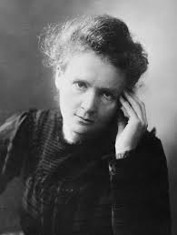
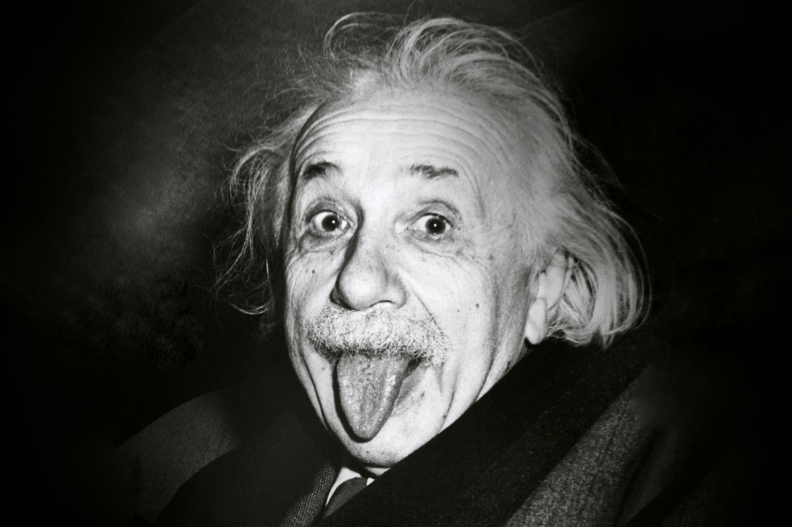

Galileu viveu na Itália e ficou conhecido por estudar o movimento dos corpos. No ano de 1630, Galileu provou que corpos de massas diferentes caíam em direção à Terra com a mesma aceleração.
Isaac Newton
Newton foi o físico inglês responsável por estabelecer três leis universais do movimento, bem como a lei da gravitação universal. Ele revolucionou o entendimento do Universo a partir de suas equações.
James Clerk Maxwell
Maxwell produziu uma teoria sobre o eletromagnetismo, essa teoria afirmava que a luz é produzida por campos elétricos e magnéticos, e comporta-se como uma onda.
Marie Curie

Foi a única cientista da história a ser laureada com os prêmios Nobel de Física e Química. Marie Curie contribuiu para o estudo da radiação a partir criação de métodos usados para a separação de isótopos radioativos, além de ter descoberto, junto ao seu marido, os elementos rádio e polônio.
Albert Einstein

Albert Einstein foi um físico alemão responsável pela explicação do efeito fotoelétrico, pela criação das teorias de relatividade especial e geral, bem como o estabelecimento da relação entre massa e energia.